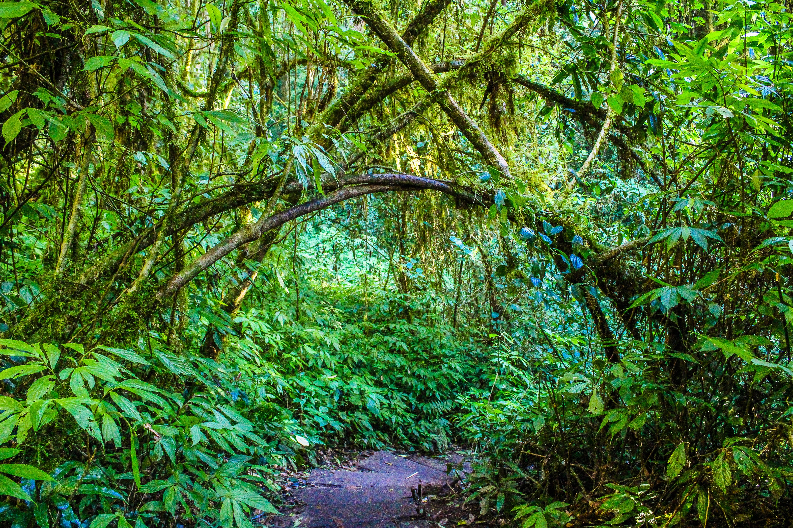
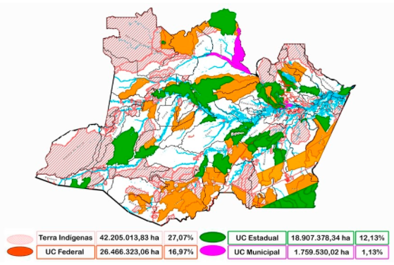

A importância de preservar a Amazônia
A Amazônia realmente não é o pulmão do mundo. Isso porque, apesar de produzir oxigênio, ela acaba consumindo praticamente todo esse oxigênio para sua própria manutenção. O real “pulmão do mundo” é o fitoplâncton, conjunto de algas marinhas microscópicas, fotossintetizantes e muito numerosas que produzem 54,7% do oxigênio do mundo. Mas esse está longe de ser um argumento para desmerecer a importância da maior floresta tropical do mundo.
Em primeiro lugar, vale lembrar que há um outro elemento muito importante envolvido na produção de energia das plantas além da liberação de oxigênio: a absorção do dióxido de carbono, o CO2. Um estudo da Nasa publicado em 2014 concluiu que a Floresta Amazônica contribui diretamente com a redução do aquecimento global – fenômeno desencadeado pelos gases poluentes, como o CO2, que destroem a camada de ozônio. Isso porque, apesar de liberar muito dióxido de carbono durante a decomposição de suas árvores mortas, a floresta acaba absorvendo muito mais no processo da fotossíntese, reduzindo a quantidade desse gás na atmosfera. Além disso, a maior parte da amazônia está dentro do estado do Amazonas.
Além disso, há ainda outras atribuições mais improváveis da Amazônia que a maioria das pessoas sequer imagina: ela influencia, e muito, o regime de chuvas de todo o Brasil, por exemplo. Isso porque as árvores “transpiram” vapor de água o tempo todo.
Cerca de 99% da água absorvida por elas é perdida para o ambiente dessa forma. A transpiração acontece principalmente nas folhas das plantas, por estruturas chamadas estômatos. Essas estruturas epidérmicas são ricas em cloroplastos e têm uma abertura denominada ostíolo, que é por onde a água é eliminada para o ambiente.
A ocorrência de incêndios florestais na Amazônia é comum na temporada de seca, que se estende de julho até outubro no Brasil. No entanto, alguns dados do Instituto Nacional de Pesquisas Espaciais (INPE) mostram que o país foi alvo de um aumento devastador no número de focos de incêndio em 2019 (com um aumento de 83% com relação ao mesmo período do ano anterior), levantando a suspeita de que incêndios criminosos também contribuíram para o aumento da devastação.
Apesar de os estados de Roraima, Acre, Rondônia e Amazonas terem sido os mais afetados, as consequências do desmatamento atingem todas as partes do país. O fenômeno que escureceu o céu de São Paulo durante o dia é um exemplo de como nenhuma área está totalmente isolada ou imune ao desequilíbrio ambiental.
Quais são os impactos da falta de preservação da Amazônia?
As consequências da falta de preservação podem ser devastadoras, impactando a qualidade do solo, a vegetação e a fauna da Amazônia, causando até mesmo efeitos com alcance global.
Liberação de carbono
As florestas tropicais armazenam carbono e são as principais fontes de estabilização do clima em todo o mundo. No entanto, o desmatamento e a extração de madeira liberam esses gases para a atmosfera, poluindo o ar e contribuindo para o desequilíbrio da temperatura. Com as queimadas na região amazônica, as árvores liberam em torno de 200 milhões de toneladas de carbono por ano.
É por esse motivo que o plantio de árvores é uma estratégia para reduzir a emissão de poluentes na atmosfera. Em 2015, o Governo Federal assinou um compromisso nos Estados Unidos de recuperar 120 mil quilômetros de florestas e zerar o desmatamento ilegal até 2030. O objetivo era cumprir as metas de redução de emissões de carbono, conforme estabelecido em um acordo internacional.
Regime de chuvas
Você sabia que a área amazônica é responsável por gerar e disseminar grandes quantidades de água para todo o país? O vapor gerado pela evapotranspiração é responsável por levar umidade e distribuir chuvas pela Bolívia, Argentina, Paraguai, Uruguai e Chile, além de irrigar o Sudeste, o Centro-Oeste e o Sul do Brasil.
O desmatamento prejudica a evapotranspiração e a rota aérea da água, afetando o regime de chuvas em todo o país, com impactos em diferentes setores produtivos.

Agricultura
Com o regime de chuvas desequilibrado, ela pode deixar de encher rios, córregos, represas (inclusive as que são importantes para as hidrelétricas) e irrigar lavouras. Safras inteiras podem ser perdidas com o atraso das chuvas em uma semana, por exemplo.
É por isso que, ao contrário do que possa parecer, a preservação da Amazônia é crucial para a manutenção do agronegócio no Brasil. Isso não inclui apenas a produção de alimentos, mas também de energia elétrica.
Disponibilidade de água doce
O Rio Amazonas é um dos mais extensos do mundo, levando cerca de um quinto de todo o volume de água doce aos oceanos. Além disso, as florestas também promovem o reabastecimento dos lençóis freáticos. Por isso, não é difícil concluir que a degradação ambiental compromete a disponibilidade de água doce. Afinal, a falta de preservação desequilibra o volume de chuvas, reduz o nível de água em rios e seca nascentes.
Todos esses fatores combinados influenciam diretamente o aumento de gases causadores do efeito estufa na atmosfera, contribuindo para o agravamento das mudanças climáticas e do aquecimento global.
Economia
Os impactos do desmatamento têm um potencial enorme de prejudicar diretamente o agronegócio brasileiro. Como vimos, diversos fatores ambientais exercem grande influência sobre a atividade agrícola, especialmente o regime de chuvas, cuja manutenção está ligada à preservação da Amazônia.
Atualmente, o agronegócio é responsável por 21,6% do PIB do país, segundo o Ministério da Agricultura. No entanto, as mudanças climáticas, puxadas pela devastação da floresta, têm afetado negativamente o setor. Em 2019, por exemplo, a Associação dos Produtores de Soja (Aprosoja) mostrou a perda de mais de 16 milhões de toneladas na safra do grão, em função da seca que atingiu as principais regiões produtoras.
Além disso, a manutenção da diversidade da Amazônia também é importante para a boa oferta de “produtos da floresta”, ou seja: para a fabricação de medicamentos, óleos, cosméticos e alimentos. Alguns deles são comercializados em todo o país e exportados para o mundo, como o açaí, jaborandi, couro vegetal, castanhas, fitoterápicos, resinas e artesanatos indígenas. Isso porque mais de dez mil espécies de plantas amazônicas são ricas em ativos para uso medicinal e cosmético.
Como ajudar na preservação da Amazônia?
É papel dos governos, em todas as suas esferas, coibir a degradação não só da Amazônia, mas também da Mata Atlântica, do Pantanal e de todos os outros biomas do nosso país. No entanto, embora ninguém consiga promover grandes mudanças sozinho, algumas atitudes simples podem fazer a diferença na preservação da floresta amazônica. Abaixo, listamos algumas medidas para você colocar em prática na sua rotina:
Reduza o seu consumo de papel e madeira
Você pode ajudar reduzindo o consumo de itens descartáveis (como guardanapos, papéis, pratos e canudos), digitalizando documentos e fazendo a reciclagem de produtos usados. Ao comprar móveis e itens de construção, dê preferência para as empresas que trabalham apenas com madeira de reflorestamento.
Consuma menos carne
Reduzir o consumo de carne reduzirá a demanda por ela, acabando com os incentivos para derrubar mais florestas destinadas à criação de gado. De acordo com uma série de relatórios publicados pelo Greenpeace, a pecuária faz parte dos principais fatores de devastação ilegal na Amazônia, ocupando 80% das áreas desmatadas.
Participe de redes de apoio
Eduque-se e apoie petições ou projetos que cuidam das comunidades afetadas pelo fogo e de preservação da floresta. Quanto maior o número de vozes, maior tende a ser a pressão feita ao poder público e privado para que tomem consciência da prioridade que a preservação da Amazônia deve ter para o desenvolvimento do país, tanto no campo ambiental, quanto nos campos econômico e social.
Como você pôde perceber, preservar a Amazônia é preservar a qualidade de vida de todos os seres vivos, com impactos para boa parte do planeta. Você também pode se engajar e fazer a sua parte para reverter esse cenário tão crítico para a biodiversidade brasileira.